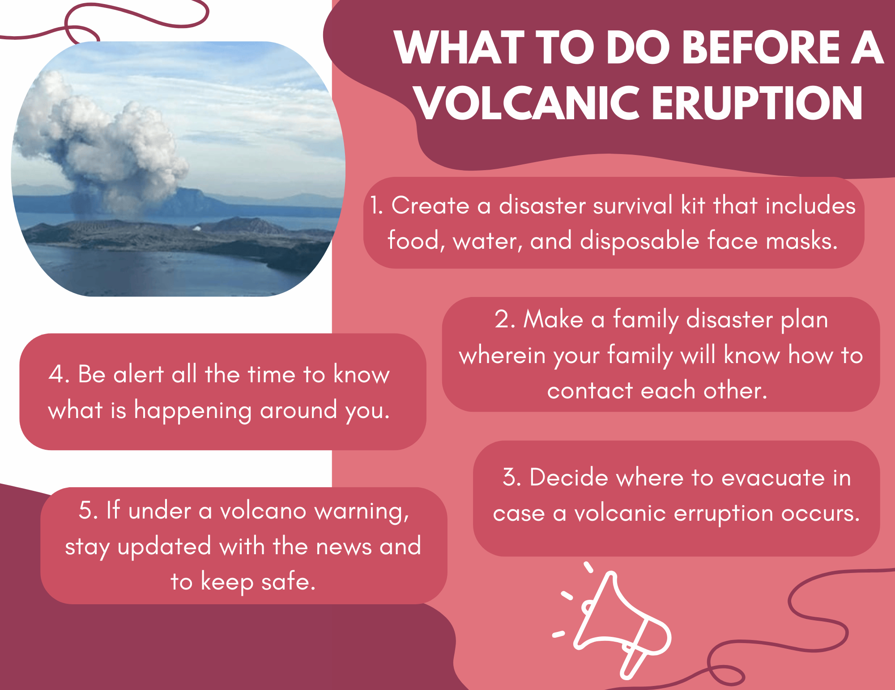
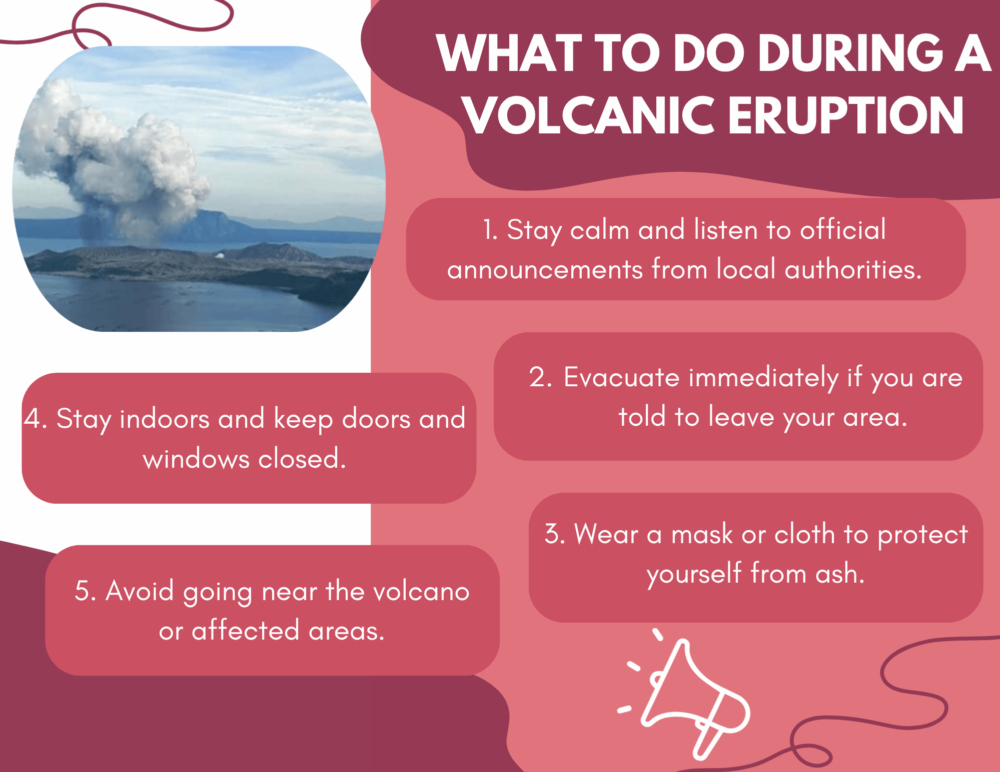
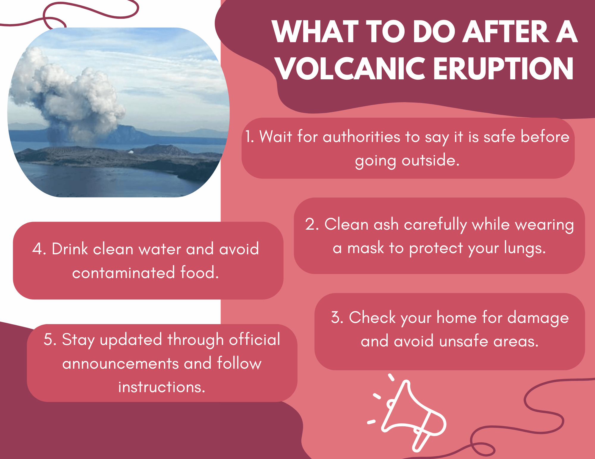

1. Create a disaster survival kit that includes food, water, and disposable face masks.
2. Make a family disaster plan wherein your family will know how to contact each other.
3. Decide where to evacuate in case a volcanic erruption occurs.
4. Be alert all the time to know what is happening around you.
5. If under a volcano warning, stay updated with the news and to keep safe.

1. Stay calm and listen to official announcements from local authorities.
2. Evacuate immediately if you are told to leave your area.
3. Wear a mask or cloth to protect yourself from ash.
4. Stay indoors and keep doors and windows closed.
5. Avoid going near the volcano or affected areas.

1. Wait for authorities to confirm it is safe to go outside.
2. Clean ash carefully while wearing a mask to protect your lungs.
3. Check your home for damage and avoid unsafe areas.
4. Drink clean water and avoid contaminated food.
5. Stay updated through official announcements and follow instructions.